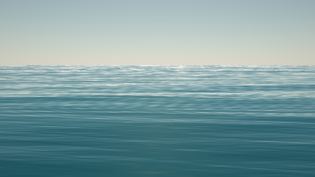
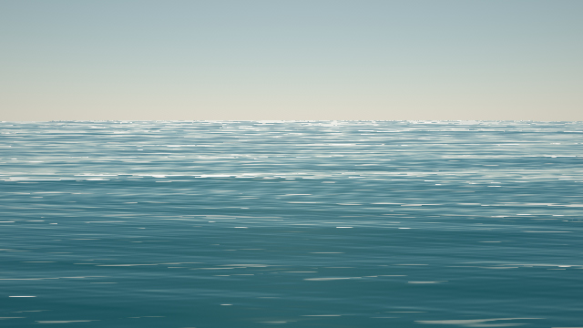
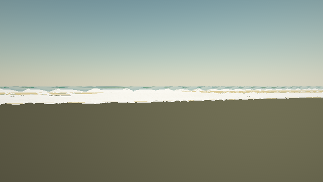
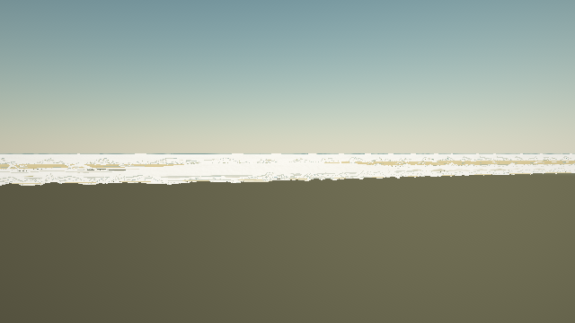
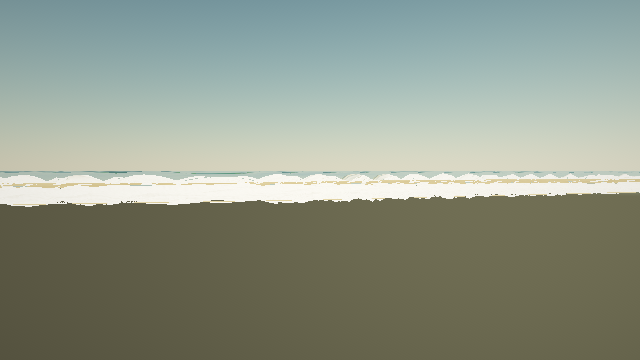
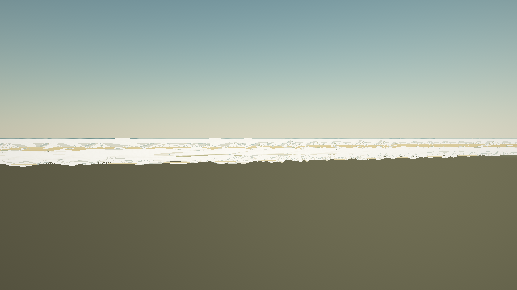

2026-08-20T18:18:43.649Z · 8 fixtures · chromium / swiftshader
| Gate | Result | Worst fixture | What it is |
|---|---|---|---|
| Runs clean | pass | 0.000 | Any WebGL, shader-compile or JavaScript error on any fixture. A variant that throws is not a slower variant, it is not a variant. |
| Same input, same pixels | pass | 1.000 | The fixture is rendered twice at one simulation time and the frames must be byte-identical. Anything reading the wall clock, an unseeded random, or a persistent buffer fails here — and would otherwise make every comparison against this variant unrepeatable. |
| Temporal stability | pass | 0.217 index | Two frames one 60th of a second apart, differenced and high-pass filtered, then divided by the high-frequency detail already in the frame. A wave crossing the screen produces a smooth difference; aliasing produces a speckled one. The normalisation is what makes the number comparable between a millpond and a storm — unnormalised it mostly measures how much detail a scene has. This is the gate that catches "I turned the detail up and the screenshot looks amazing", which is the most common regression in this project. |
| Measure | Champion | Candidate | Reference | Δ | What it is |
|---|---|---|---|---|---|
| Frame cost | 2129.237 | 1554.537 ms | 1976.200 | 0.73× | Median frame time over a short burst, measured inside the page with an explicit glFinish. Absolute numbers come from a software rasteriser and are not a frame budget for real hardware; the ratio against the champion is the number that travels. |
| Significant wave height vs JONSWAP | 5.181 | 5.181 m | 2.135 | unchanged | Hs measured as 4x the standard deviation of the height field, read back from the shipped shader over a 1 km patch. The reference is the fetch-limited energy growth law capped at the fully developed sea, in quadrature with the swell train. This is a conformance check, not a discovery: the champion spectrum normalises itself to this law on purpose, so what the metric catches is a variant that departs from it — a plain sine sum, or a regression. A patch sampled every 4 m cannot see trains shorter than about 20 m, so a small under-read is expected and is inside the tolerance. Deep water only. |
| Whitecap coverage vs Monahan | 0.126 | 0.000 fraction | 0.005 | further | Plan-view foam area fraction, sampled from the shipped shader on a regular world grid — the same quantity the surveys measured. The law is calibrated roughly 4-20 m/s; outside that the reference is extrapolated and marked. Deep-water fixtures only. |
| Spectral tail slope | -4.108 | -4.108 exponent | -3.000 | unchanged | Least-squares slope of log power against log wavenumber, fitted only above the spectral peak — the saturation range, where Phillips argued the shape is fixed by breaking rather than by the wind — and averaged over every row and column of a 512 m probe sampled every metre. Expected near -3 for a wind sea. |
Same scene, same sun, same wave phase, same camera. Drag to wipe.


championcandidate

championcandidate

championcandidate